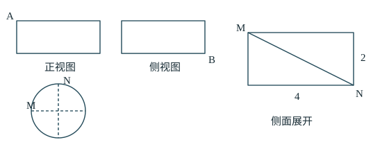
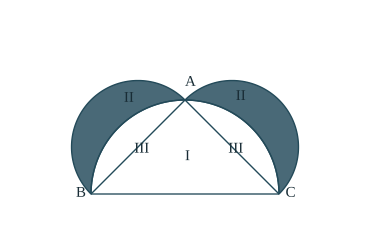
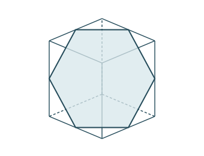
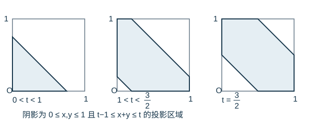
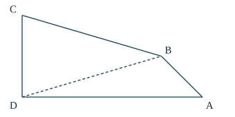
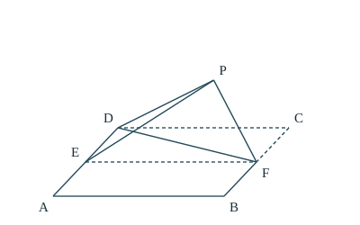
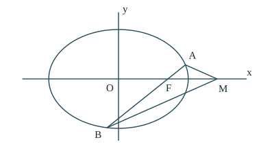
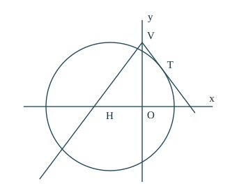

第 1 题 · 选择题 · 5 分
先化简复数，再求模
题目
设 ，求 。所用高中知识：复数四则运算；共轭复数；复数的模。
思路分析
复数模的计算要放在最后。先将分母实数化，把整个复数化成 ，再用 。
分步解答
第一步：分子分母同乘共轭复数。 因 的共轭为 ，
分母 ；分子 ，所以分式等于 。
第二步：完成加法。 。
第三步：求模。 。
答案
C；。
检查与易错点
可用乘法回查：，说明分式化简正确。 一般不等于 ，本题不能先对两项分别求模再相加。
全卷教学详解 · 2026 年 10 月修订
完整收录第 1—23 题。每题先说明转化思路，再写出计算、分类与取等条件；全部解析采用高中数学知识。第 22、23 题原考试二选一，本册两题均讲解。
建议先独立思考，再阅读分步解析；最后核对题目条件、端点、特殊情形及答案是否可实现。题目按所提供版本作教学性重述，图形为关系示意，不用于测量。
第 1 题 · 选择题 · 5 分
所用高中知识：复数四则运算；共轭复数；复数的模。
复数模的计算要放在最后。先将分母实数化，把整个复数化成 ，再用 。
第一步：分子分母同乘共轭复数。 因 的共轭为 ，
分母 ；分子 ，所以分式等于 。
第二步：完成加法。 。
第三步：求模。 。
C；。
可用乘法回查：，说明分式化简正确。 一般不等于 ，本题不能先对两项分别求模再相加。
第 2 题 · 选择题 · 5 分
所用高中知识：集合补集；一元二次不等式。
原集合使用严格大于号，补集中应包括使原式为零的端点。可先求原集合，也可直接将条件改为“不大于零”。
第一步：找出符号变化点。
两个零点为 。
| 的范围 | 乘积 | ||
|---|---|---|---|
| 负 | 负 | 正 | |
| 正 | 负 | 负 | |
| 正 | 正 | 正 |
因此 。
第二步：取实数全集中的补集。 不在 中的实数，正好是两个零点和它们之间的数，所以
B；。
都使原式等于 ，不满足 ，因此都属于补集。补集中的不等号应为 ，不是 。
第 3 题 · 选择题 · 5 分
| 收入类别 | 建设前 | 建设后 |
| 种植 | 60% | 37% |
| 养殖 | 30% | 30% |
| 第三产业 | 6% | 28% |
| 其他 | 4% | 5% |
所用高中知识：统计图表；百分数；增长率。
两幅统计图的总量不同。占比变小不一定意味着实际收入变小，必须将建设前后收入放在同一基准下比较。
第一步：统一基准。 设建设前总收入为 ，则“增加一倍”意味着建设后为 。
| 收入类别 | 建设前实际收入 | 建设后实际收入 | 后者除以前者 |
|---|---|---|---|
| 种植 | |||
| 养殖 | |||
| 第三产业 | |||
| 其他 |
第二步：逐项判断。
A。
“变为原来的 2.5 倍”与“增加 2.5 倍”不同。本题选“不正确”的结论，因此应选唯一错误项 A。
第 4 题 · 选择题 · 5 分
所用高中知识：等差数列通项和前 n 项和。
首项已知，等差数列只剩公差一个未知量。将三个部分和都写成公差的表达式，方程就能确定整个数列。
设公差为 ，依次有 。相加得
代入 ，
因此 ，。所求不是部分和，而是第五项：
B；。
数列前四项为 ，从而 ，确有 。本题下标是 ，不能误读成 。
第 5 题 · 选择题 · 5 分
所用高中知识：奇函数；多项式求导；切线方程。
切线斜率来自导数，但在求导之前先用奇性确定参数。奇性是一条对所有实数成立的恒等关系，足以消去偶次项。
第一步：写出奇函数条件。
因为 ，所以
取 即得 ；代回确有 为奇函数。
第二步：求切点处导数。
第三步：用点斜式写切线。 切线经过 ，斜率为 ，所以
D；。
只说明曲线经过原点，不能说明切线水平；切线斜率应计算 。
第 6 题 · 选择题 · 5 分
所用高中知识：向量加减与数乘；中点公式。
先把中点关系写成以 为共同起点的向量式。最后求 时，用“从 到 ，再从 到 ”的路径确定正负号。
第一步：利用 是 中点。 由中点向量公式，
第二步：再利用 是 中点。
第三步：沿路径写出所求向量。
A。
若写成 ，得到的是反方向的 。可以把 视为原点：，则 ，再核查一次。
第 7 题 · 选择题 · 5 分

所用高中知识：圆柱侧面展开；圆周长；勾股定理。
圆柱侧面展开后变成矩形；曲面上的路径长度保持不变。先从两种投影辨认圆周位置的夹角，再将最短路转成平面上两点之间的线段。
第一步：读出竖直距离与圆周间隔。 点 位于上底圆边缘， 位于下底圆边缘，所以高差为 。正视图与左视图的投影方向互相垂直：题中两个轮廓位置对应的半径也互相垂直，故沿底面圆周的短弧为四分之一周。
第二步：将短弧展开。 底面周长为 ，短弧长为 。侧面展开图中， 的水平距离为 ，竖直距离为 。
第三步：求这一展开方式中的最短路。 两点之间线段最短，因此
第四步：排除绕另一方向或多绕几圈。 另一方向的圆周间隔为 ；更多绕行对应水平位移 ，，其绝对值最小为 。竖直距离固定为 ，水平位移越大，勾股所得长度也越大。所以本解是全局最短路。
B；。
“仅沿侧面”排除了跨越底面的路线，也不能使用空间中 的直线距离。展开后的水平距离是圆弧长，不是圆内弦长。
第 8 题 · 选择题 · 5 分
所用高中知识：抛物线标准方程；直线方程；向量数量积。
焦点和直线方程都容易确定，且联立后的两个根为整数，直接求出交点再算数量积最清楚。
第一步：写出焦点与直线。 抛物线 中 ，所以 ，焦点 。由点斜式，
第二步：求两交点。 代入抛物线，
故 ， 或 。相应横坐标为 或 ，所以可取 。
第三步：用相同起点求向量。
因此
D；。
两个点都满足原直线与抛物线；交换 不改变数量积。数量积并不是 ，后者还需乘夹角余弦。
第 9 题 · 选择题 · 5 分
所用高中知识：分段函数；单调性；指数对数；零点存在定理。
在两个不相交的定义域上分别数零点，再将个数相加。两段都严格递增，所以每段至多一个零点；重点是判断何时存在。
第一段：。 此时 ，
为直接确认根存在，令 ，。有
该段在 上连续，故存在零点；又严格递增，所以恰有一个正零点，与 的取值无关。
第二段：。 此时 ，，所以最大函数值在端点 取得，为 。仍用 ，
于是：
| 端点值 | 上的零点数 | 原因 |
|---|---|---|
| 所有值都不大于一个负数 | ||
| 仅 取零 | ||
| 两端异号，且严格递增 |
第一段恒有一个零点，所以全函数恰有两个零点，等价于 。
C；。
属于指数这一段，不属于对数这一段；当 时仍有一个零点在 ，另一个在正半轴，故必须保留 。上述证明使用有限异号点，不依赖极限记号。
第 10 题 · 选择题 · 5 分

所用高中知识：半圆面积；勾股定理；面积型几何概型。
不必分别计算每个弯月形的面积。半圆面积与直径平方成正比，而勾股定理恰好把两个直角边的平方和变成斜边平方，能得到整体面积相等关系。
第一步：写出三个半圆的面积关系。 直径为 的半圆面积为
由于 ，，故
即两个小半圆的面积和等于大半圆面积。
第二步：用图中区域替换整体面积。 设区域Ⅰ、Ⅱ、Ⅲ的面积分别为 。两个小半圆合计覆盖区域Ⅱ与区域Ⅲ，面积为 ；大半圆覆盖三角形Ⅰ与区域Ⅲ，面积为 。因此
第三步：转为概率。 所有概率的分母都是整个图形的面积 ，所以
A；。
面积抵消的是两个整体图形共有的区域Ⅲ，不是把曲边区域近似成三角形。三角形的具体边长不影响这个结论，只需满足直角条件。
第 11 题 · 选择题 · 5 分
所用高中知识：双曲线焦点、渐近线；垂直斜率；两点距离。
必须先确定直角在哪个顶点。 所在的两条渐近线不垂直，直角不能在 ；由对称性，计算直角在其中一个交点的情形即可。
第一步：确定已知曲线的几何要素。 ，所以 ，右焦点 ，渐近线为 。两条斜率乘积为 ，故 不是直角。
第二步：设直角位于上方渐近线上的 。 的斜率为 ，故与它垂直的 斜率为 。又 过 ，所以
与 联立：，得 ，。
与 联立：，得 ，。
第三步：计算弦长。
若直角位于另一条渐近线上的交点，图形关于 轴对称，距离不变；交换 的命名也不影响所求。
B；。
三角形的某个角为直角，并不意味着它的两条已知渐近线垂直。先排除 ，再利用垂直斜率，分类才完整。
第 12 题 · 选择题 · 5 分


所用高中知识：空间向量与线面角；正投影；三角形面积；二次函数最值。
等角条件先确定截面的方向，但还没有确定截面在正方体中的位置。把同方向的平面平移时，截面会由三角形变为六边形；需要计算整个平移过程的面积，才能证明中央截面最大。
第一步：由线面角确定平面方向。 取正方体为 ，三组棱分别平行于坐标轴。设截面法向量为 。棱与平面的夹角正弦分别为
等角条件推出 。如有负分量，可将对应坐标作 这样的对称变换；正方体保持不变，面积也不变。因此只需考虑
平面方程也可直接由法向量说明：同一平面内两点的坐标差与 的数量积为零，所以它们的 相同。
第二步：将截面投影到水平面。 由 ，点在正方体内等价于
截面在 平面上的正投影就是单位正方形中的这条带状区域。设它的面积为 。
截面法向量为 ，水平面法向量为 ，两平面锐夹角 满足
高中正投影面积关系给出 ，故 。
这个面积关系为什么成立。 可沿平行于两平面交线的方向，将多边形分成若干三角形和梯形。投影时平行交线的底边长度不变，面内垂直于交线的高缩短为原来的 倍。由三角形、梯形面积公式，每一小块面积都乘同一因子，合起来仍如此。只用了长度的正投影及平面面积公式。
第三步：利用中心对称减少分类。 变换 将参数 变成 ，面积保持不变。因此只需计算 。
两种情形比较，投影面积最大为 ，仅在 时达到。
第四步：恢复截面面积并核查等号。
此时平面经过六条棱的中点，截面为边长 的正六边形；将其分为六个等边三角形，面积为 ，再次验证。
A；。
中央正六边形只能提供一个候选值；上面的分段面积及中心对称才证明其他位置都不能更大。投影面积小于真实面积，恢复时应乘 ，不是除以它。
第 13 题 · 填空题 · 5 分
所用高中知识：二元一次不等式组；不等式估计；等号条件。
不必先画出整个可行域。第一条约束给出 的上界，第三条再给出 的上界，可以逐级控制目标值；最后检查等号点是否满足未使用的条件。
由 ，得 。乘以正数 ，不等号方向保持，故
再由 ，得 ，所以所有可行点均满足 。
两步同时取等需要 且 ，即 。代入三条原约束：
该点合法，且 ，所以上界可以达到。
最大值为 。
只写 还没有完成最值证明；“存在合法取等点”才把上界变成最大值。第二条约束虽未参与估计，仍必须在取等点核查。
第 14 题 · 填空题 · 5 分
所用高中知识：数列前 n 项和；相邻作差；等比数列。
由部分和求通项，常用相邻两式作差。但 没有题设中的 条件，应先单独确定首项，再对 作差。
第一步：代入 。 因 ，题设给出
第二步：对相邻两式作差。 当 时，
两式相减并用 ，得到
故数列为首项 、公比 的等比数列，。
第三步：计算所求和。
也可由 代回原关系，。
。
题设虽然有正的常数 ，但首项为负，全部项都为负。把前六项直接写出能迅速发现结果反号的错误。
第 15 题 · 填空题 · 5 分
所用高中知识：组合数；分类计数；对立事件的计数思想。
“至少一位女生”包括一位或两位女生。其反面“没有女生”只有一种人数结构，适合用全部选法减去不合要求的选法。
方法一：补集计数。 六人中任选三人，共有
种。三人全为男生有 种，因此合要求的选法为 种。
方法二：按女生人数分类复核。
| 女生人数 | 男生人数 | 选法 |
|---|---|---|
女生总共只有两位，所以没有第三种情形。两类互不重复，合计 。
种。
本题只选出三个人，没有给三人安排不同职位，因此用组合而不是排列。同一组三个人的选择顺序改变，不产生新的选法。
第 16 题 · 填空题 · 5 分
所用高中知识：三角恒等变换；周期性；导数符号与最值。
两项三角函数使用同一个 ，不能各取最小值后直接相加。先利用周期把全实数问题缩到一个完整周期，再用导数找候选点并比较。
第一步：缩小考察范围。 与 都以 为周期，所以 以 为周期，只需研究 。
第二步：求导并因式分解。
故导数为零的点为 。
第三步：看清符号及候选点。 ，仅在 处为零；导数在 和 上为正，在 、 上为负。因此 虽然导数为零，但两侧仍递减，不是极值点。
例如在 处，，，故函数值为 ，小于所有其他候选值。
最小值为 ，在 ， 时取得。
导数为零不必然是极值；闭区间最值也要比较两个端点。 与 的取等条件不能同时成立，所以 不是本题最小值。
第 17 题 · 解答题 · 12 分

所用高中知识：正弦定理；余弦定理；三角形内角和；锐角三角函数。
先在三角形 中求角，再利用图中直角 将角度转移到三角形 。由正弦值求余弦时，必须先确定角是锐角还是钝角。
（1）先求正弦，再定余弦符号。 设 。在三角形 中，正弦定理给出
因为 ，由同一三角形中“大边对大角”，有
所以 是锐角，，于是
（2）将角度关系传到三角形 。 根据题图，射线 位于 内部，而 ，所以
在三角形 中使用余弦定理：
边长为正，故 。
（1）；（2）。
余弦前的负号不能改变；第二问的夹角是 ，不是 。边 对应角 ，正弦定理中的配对必须准确。
第 18 题 · 解答题 · 12 分

所用高中知识：折叠保长；线面、面面垂直；勾股定理；线面角。
折叠前的中位线关系与题设的新垂直关系共同给出线面垂直。求线面角时，用折叠不变的两条长度求出点 到底面的高度，再除以斜线 的长度。
（1）从两条面内相交直线入手。 正方形中 为 中点，所以 。又 ，故 。题设还给出 。
在平面 内相交于 ，因此 平面 。而 位于平面 内，于是平面 平面 。
（2）选取方便的长度单位和坐标。 角度与正方形的整体大小无关，令边长为 。以 为原点，沿 分别取 轴，以底面法线取 轴。于是
取折起的点在 一侧，设 ，。
先用新条件确定一个坐标。 因 ，
所以 。
再用保长条件求另两个坐标。 折叠保持三角形 的形状，所以 ，。由距离公式，
第二式减第一式得 ，故 。代回第一式，
最后明确线面角的直角三角形。 设 为 在底面上的垂足。 在底面内， 为斜线 的正投影，所以 为线面角 。在直角三角形 中，
（1）平面 平面 ；（2）线面角正弦为 。
题设的垂直条件是 ，不要误看成 ，二者条件不同。计算后可验 ，。
第 19 题 · 解答题 · 12 分

所用高中知识：椭圆；直线方程；韦达定理；轴对称与角。
第一问是竖直焦点弦，直接代入即可。第二问要证明两条射线与 的夹角相等，可先证明直线 的斜率互为相反数，再说明两条射线都朝向 的左侧，从而排除互补角的误判。
（1）确定焦点与交点。 椭圆的 ，所以 ，右焦点为 。当 轴时，直线为 。代入椭圆，
可以是上方或下方交点。由 ，两种可能的直线方程为
注意：若 在上方，其斜率为负；若 在下方，其斜率为正。
（2）先覆盖特殊方向。 若 竖直，两交点关于 轴对称，两角相等。若 是 轴，两点均在 左侧，射线 同向，两角均为 。
其余情形设斜率并联立。 写 ，，交点为 。代入椭圆并乘以 ，
整理为
由韦达定理，
计算两条目标直线的斜率之和。 椭圆上 ，所以 ，两条斜率均有意义。令它们为 ，则
将根和与根积代入分子：
所以 。
从直线斜率回到射线夹角。 保证射线 都向左。斜率互为相反数，意味着两条向左的射线关于负 轴对称；负 轴方向就是 。故
（1）；（2）两角对所有过焦点的弦都相等。
两个相反斜率只说明两条直线关于 轴对称；还要检查射线的左右方向。直接设有限斜率会遗漏竖直弦，所以必须先单独处理。
第 20 题 · 解答题 · 12 分
某工厂产品成箱包装，每箱 200 件。交付前检验，逐件检测费用为每件 2 元；以合格品换下不合格品。交付后每发现一件不合格品赔偿 25 元。各件产品不合格的概率均为 （），且相互独立。
（1）先任取一箱中的 20 件检测，求恰有 2 件不合格的概率，并求该概率最大时的 。
（2）检测 20 件发现 2 件不合格，以（1）中确定的 作为 的值。若该箱其余产品不再检测，每箱检测费用与赔偿费用之和记为 ，求 ；以总费用期望为决策依据，是否应检测其余产品？
所用高中知识：独立重复试验与二项分布；导数；随机变量期望。
第一问是“20 次独立试验中恰好出现 2 次不合格”，先写二项概率，再对未知概率参数求最大值。第二问把已检测的 20 件与剩下的 180 件分开，确保两种方案使用相同费用口径。
（1）建立概率式。 从 20 个位置中选出 2 个不合格位置有 种；每个指定位置组合的概率为 ，各组合互斥，所以
求导时对两个因子使用乘积法则：
在 中，前两个因子为正，故导数在 上为正，在 上为负。概率先增后减，最大值在
处取得。
（2）按题意采用这个估计概率。 抽检的 20 件中不合格品已换成合格品，只有剩下的 件可能在交付后产生赔偿。设其中不合格数为 ，则
这是高中二项分布的期望公式，不需逐件引入新的随机变量。
若停止检测。 已检测费用为 元，赔偿费为 元，所以
若继续把剩余产品全部检测。 总共检测 200 件，费用为 元。不合格品均被换下，不再发生题设中的赔偿。
| 方案 | 检测费 | 赔偿费期望 | 合计期望 |
|---|---|---|---|
| 只检前 20 件 | 元 | 元 | 元 |
| 全检 200 件 | 元 | 元 | 元 |
因 ，按期望费用较小原则应继续检测，期望少支出 元。
（1），最大时 ；（2） 元，应检测其余产品。
也可只比较增量：继续检测花 元；不检的预期赔偿为 元，结论相同。不能将两种方案都已发生的 元只计在其中一边。结论采用题设仅计检测费与赔偿费的口径，不另加未给定的换货成本。
第 21 题 · 解答题 · 12 分
已知 。 （1）讨论 的单调性； （2）若 存在两个极值点 ，证明
所用高中知识：基本不等式；导数；二次方程；韦达定理；对数。
导数的分母始终为正，符号由一个二次式控制，参数分界由 得到。第二问利用两个极值点乘积为 ，把两个未知点化成 与 ，再用高中导数证明所需对数不等式。
（1）先写定义域与导数。 定义域为 ，
当 时，因 ，有 。 时处处严格小于零； 时
除 外均为负。函数在 、 递减且在 处连续，跨过 时仍保持大小顺序，故全域严格递减。
当 时，方程 有两个不同正根
它们的乘积为 ，且 。导数分解为
因此
| 区间 | |||
|---|---|---|---|
| 符号 | 负 | 正 | 负 |
| 单调性 | 递减 | 递增 | 递减 |
是极小值点， 是极大值点。
（2）由极值点关系降为一个变量。 存在两个极值点必有 。原商交换 后不变，不妨令 ，设 。韦达定理给出
逐项计算
所以
证明所需的一元不等式。 设
有 ，而当 时
因此 ，即 。因分母 ，可除得
再乘以正数 并减 ，便得
（1） 时全域递减； 时单调区间如上。（2）题设严格不等式成立。
第二问的严格性来自 ，而非 。 时仅有一个导数为零的点 ，导数不变号，不是两个极值点的情形。全证明仅用高中导数与韦达定理。
第 22 题 · 选考题 · 10 分

所用高中知识：极坐标转直角坐标；圆与直线；判别式；根的符号。
极坐标先转成圆方程。绝对值图像是从同一个顶点出发的两条射线；得到相切条件以后，必须核查切点是否在正确半轴上，不能把两条射线当作完整直线。
（1）转为直角坐标。 使用 与 ，
圆心为 ，半径为 。
（2）先判断三个交点的结构。 两条射线的公共端点为 ，，即顶点在圆外。由圆外点出发的射线，若为割线且朝向圆，会遇到两个交点；若为切线且切点在射线上，会遇到一个交点；其余没有交点。公共端点本身不在圆上。因此恰好三个公共点必须来自“一个切点加两个割点”。
先考察右射线相切。 右射线为 ，，代入圆得
相切要求判别式为零：
候选为 。
再考察左射线相切。 令 ，左射线为 。代入圆，
其判别式为 ，候选为 。
验证唯一保留参数确有三个交点。 当 ，左射线方程化为
判别式为 ，所以有两个不同实根。两根和为 ，积为 ：积为正说明同号，和为正说明都为正。因此这两个交点都在左射线上。加上右射线唯一切点，恰好三个。
（1）；（2），即 。
“判别式为零”只保证整条直线与圆相切；还需检查根的正负，确认它确实位于相应射线上。三个交点的必要结构、所有切线候选和最后的充分性都已覆盖。
第 23 题 · 选考题 · 10 分
所用高中知识：绝对值分段；一元一次不等式；恒成立与参数范围。
第一问由绝对值内部的两个零点分段。第二问先利用已给区间 消去其中一个绝对值，再把问题化为 对整个区间成立。
（1）令 ，按 分段。
逐段解 ：
| 分段 | 不等式 | 与该段取交后的解 |
|---|---|---|
| 空集 | ||
合并得 。
（2）利用自变量范围等价变形。 对任意 ，有 ，所以
必要性。 因 ，要让 成立，必须 。若 ，取 ，便有 ，却使 ，违反严格不等式。因此还必须 。
充分性。 若 ，那么任取 ，
所以条件对所有 均成立。
（1）；（2）。
时 ，不满足严格大于； 时因 ，仍有 ，因此右端点可取。参数区间是否开闭必须结合自变量区间判断，不能只看题目出现严格不等号就一律去掉端点。
本册逐题比对用户提供的 dot 文件夹 2018 版 PDF、histroy 文件夹历史版 PDF，以及 dist 文件夹含原生 MathML 的 HTML。三个版本的数学内容一致，PDF 文本抽取时出现的重复字形不作为题目中的重复符号。
原有版本列出的题目交叉来源：老阳讲数学的2018年全国1卷理科数学扫描页、锦宏教育试卷整理PDF、中国教育在线年份与卷别索引。本次已查阅来源页面与整理PDF，并逐题目视核查已取得的前三幅扫描图（涵盖第1—18题）。其中第三幅第18题清楚写出 PF⊥BF，解答也使用 BF⊥PF。后四幅扫描图本轮未取得，第19—23题据所提供的三个版本与整理PDF交叉核对，并独立复算。
第4题所求为 a₅；第14题结果为 −63；第18题采用本轮目视核查扫描页及三个提供版本一致的 PF⊥BF；锦宏教育重排PDF第4页误作 PF⊥BP。该差异已在正文提醒，解答统一使用 PF⊥BF，并独立检查折叠长度和角度。
本次重写全部23题的思路、关键步骤、运算与检验，合并续页。第9题用有限异号点证明零点存在；第12题补全截面投影面积的高中几何理由；第21题仅用高中导数证明对数不等式。图形依据题设关系绘制，不代替证明。
本册为独立教学整理，并非命题机构认证或正式出版终审稿。HTML 为可编辑正文，PDF 由同一 HTML 排版；旧版 Typst 或 InDesign 工程说明不适用于本次文件。正式出版前仍需版权与编辑终审。